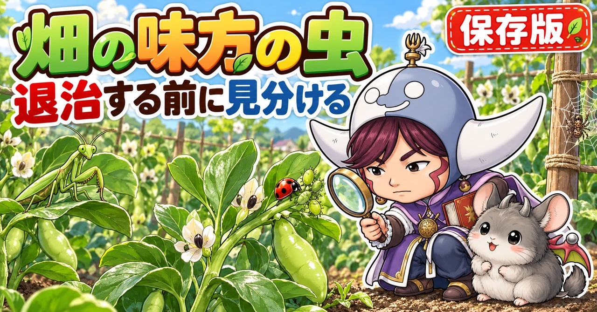
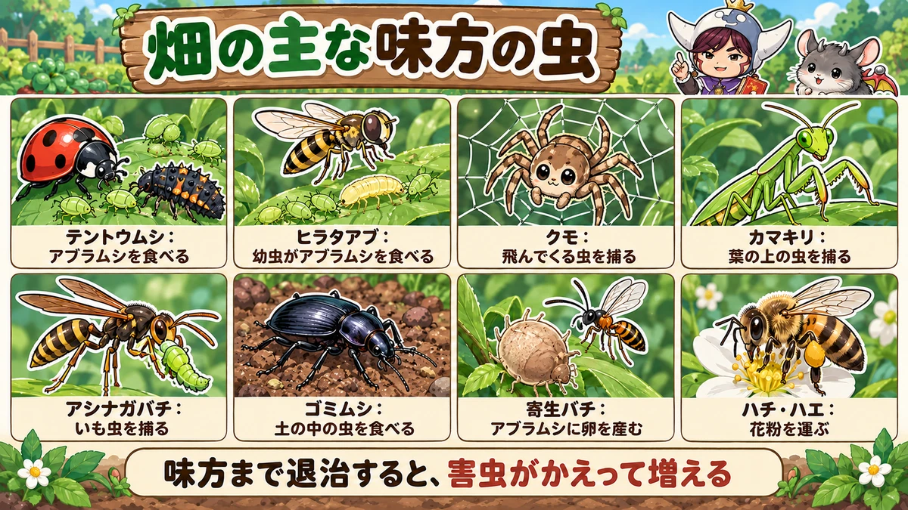
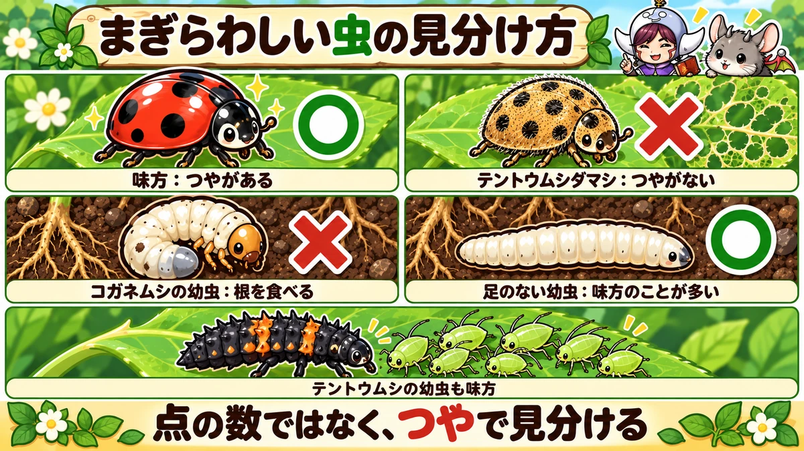

畑の味方の虫（益虫）の決定版｜テントウムシ、クモ、カマキリ、ゴミムシの見分け方と、味方を増やす畑のつくり方

📖 この記事の目次
この記事で分かること
- 畑には、野菜を食べる害虫だけでなく、その害虫を食べてくれる「味方の虫（益虫）」がたくさんいます。
- 代表的な味方は、アブラムシを食べるテントウムシ、飛んでくる虫を捕るクモ、どんな虫も捕らえるカマキリ、土の中の害虫を食べるゴミムシやゲジゲジなどです。花粉を運んで実をつけてくれるハチやハエのなかまも、味方です。
- テントウムシに似た害虫（テントウムシダマシ）や、コガネムシの幼虫に似た味方（アブの幼虫）など、まぎらわしい虫がいます。見分けてから対処します。
- 味方を増やすには、防虫ネットや保温のビニールをかけっぱなしにしない、草を取りすぎない、薬をあちこちにかけない、畑のまわりに麦やソルゴーを植える、といった工夫があります。
- 冬の片づけのときも、テントウムシやカマキリの卵のように、冬を越している味方は残しておきます。
畑で虫を見つけると、つい「退治しなきゃ」と思ってしまいます。けれども、畑にいる虫のすべてが、野菜を食べる害虫というわけではありません。中には、害虫を食べてくれたり、花粉を運んで実をつけてくれたりする、ありがたい味方の虫もいます。味方の虫まで退治してしまうと、かえって害虫が増えることもあります。
この記事では、畑で出会う味方の虫の見分け方から、まぎらわしい害虫との区別、味方の虫を増やす畑のつくり方、冬の片づけでの注意まで、順番に書いていきます。
早見：畑の主な味方の虫
害虫を食べてくれる虫
- テントウムシ（ナナホシテントウなど）：成虫も幼虫も、アブラムシを食べる
- ヒラタアブ：幼虫がアブラムシを食べる。成虫は花の蜜を吸い、花粉を運ぶ
- クサカゲロウ：幼虫がアブラムシなどを食べる
- 寄生バチ（アブラバチなど）：アブラムシなどに卵を産みつけ、中で育った幼虫が害虫を倒す
- アシナガバチ：いも虫やけむしを捕らえて、巣の幼虫のえさにする
- クモ：網を張ったり、歩き回ったりして、飛んでくる虫や葉の上の虫を捕る
- カマキリ：葉の上の虫を、待ちぶせして捕らえる
- ゴミムシ、オサムシ：地面や土の中で、ほかの虫やその幼虫を食べる
- ゲジゲジ：土の上や物かげで、小さな虫を食べる
- トンボ：飛んでいる小さな虫を捕らえる
受粉を助ける虫
- ミツバチ、マルハナバチなどのハチのなかま
- ハナアブなどのハエのなかま
いちご、すいか、かぼちゃ、トマトなどは、花粉がめしべにつかないと実がなりません。ハチやハエのなかまが花から花へ花粉を運んでくれることで、実がつきます。
虫ではないけれど味方
- カエル、トカゲ、ヤモリ：畑の虫を食べる
- ミミズ：土の中の落ち葉などを食べて、ふんで土をふかふかにする
- 鳥：いも虫などを食べる（ただし、野菜の実やタネを食べることもある）

まぎらわしい虫の見分け方
テントウムシと、テントウムシダマシ
テントウムシのなかまには、野菜の葉を食べてしまう種類もいます。それがテントウムシダマシ（ニジュウヤホシテントウなど）です。
- 味方のテントウムシ：体につやがあり、ぴかぴか光って見える。毛は生えていない
- テントウムシダマシ：体全体に細かい毛が生えているため、つやがなく、くすんだ色に見える。黒い点がたくさんある（28個ほど）
いちばん確かな見分け方は、「つや」です。味方のテントウムシには、点のないもの、2つのもの、7つのもの、20個近くあるものなど、いろいろな種類がいて、色も赤、黒、黄色などさまざまです。点の数や色ではなく、つやがあるかどうかで見分けます。
テントウムシダマシは、なす、じゃがいも、トマトなどナスのなかまの葉を食べ、葉に細かい網目のような食べあとを残します。じゃがいもで増えたものが、なすに移ってくることもあります。網目の食べあとを見つけたら、近くにいる成虫や幼虫を取ります。
テントウムシダマシの見つけかた
- 葉が、細かい横じまのように白くすけている：成虫や幼虫の食べあと
- 葉の裏に、黄色っぽい小さな卵が、何十個もかたまって産みつけられている
- 葉の裏に、クリーム色から茶色っぽい、とげのある小さな幼虫がいる
テントウムシダマシは、一度にたくさんの卵を葉の裏に産みます。卵がかえって幼虫が増えると、葉がすけるほど食べられ、なすでは実の表面までかじられて、見た目の悪い実になってしまいます。夏から秋にかけて特に増えるので、卵のかたまりを見つけたら、葉ごと取って処分します。卵の段階では、味方のテントウムシの卵と見分けるのが難しいので、なすやじゃがいもの葉の裏にあるもので、近くに食べあとがあれば、テントウムシダマシの卵と考えます。
カビを食べるテントウムシ
黄色い体のキイロテントウは、うどんこ病のカビを食べるテントウムシです。きゅうりやかぼちゃの葉で見かけたら、そのままにしておきます。
コガネムシの幼虫と、アブの幼虫
土を掘っていると、白っぽい幼虫が出てくることがあります。見た目は似ていますが、野菜の根を食べる害虫と、ほかの虫を食べる味方がいます。
- コガネムシの幼虫（害虫）：体をCの字に丸めている。頭が茶色く、胸に短い足が3対ある。お尻のほうが黒っぽい
- アブのなかまの幼虫（味方のことが多い）：足がなく、体がのびている
コガネムシの幼虫は、植えたばかりの苗の根や、芽が出たばかりのタネの根を食べてしまいます。見つけたら取り除きます。足のない幼虫は、ほかの虫を食べるなかまのことが多いので、土に戻しておきます。
ゴミムシと、ゴキブリ
ゴミムシは、黒くつやのある体で、見た目がゴキブリに似ているため、嫌われがちです。けれども、ゴミムシは成虫も幼虫も、地面や土の中で、ほかの虫やその幼虫を食べてくれる味方です。畑で見つけても、そのままにしておきます。
ハチのなかま
ハチと聞くとこわいイメージがありますが、アシナガバチはいも虫を、小さな寄生バチはアブラムシなどを退治してくれる味方です。ミツバチやマルハナバチは、受粉を助けてくれます。むやみに追い払わず、刺激しないようにして作業します。ただし、家のまわりにスズメバチやアシナガバチの巣ができて危ない場合は、無理に自分で取らず、市町村などに相談します。
さわると危ない虫
アオバアリガタハネカクシという、オレンジと黒の細長い小さな虫は、土の中の小さな虫を食べるなかまですが、体液にふれると、皮ふが赤くはれたり、水ぶくれができたりします。見つけても素手でさわったり、つぶしたりしないようにします。
見分けに迷ったときの考え方
食べあとがあるか
近くの葉に、穴や食べあとがあって、そこに虫がいれば、その虫は害虫の可能性が高くなります。食べあとがないのに葉の上を歩き回っている虫は、ほかの虫を探している味方のことがあります。
何のそばにいるか
アブラムシがびっしりついているところに、別の虫がいたら、それはアブラムシを食べに来た味方の可能性があります。テントウムシやその幼虫、ヒラタアブの幼虫などです。
迷ったら、少し様子を見る
すぐに退治せず、1〜2日様子を見ると、その虫が葉を食べているのか、ほかの虫を食べているのかが分かることがあります。スマートフォンで写真を撮っておき、あとで図鑑やインターネットで調べるのもよい方法です。
アリは、どちらか
アリは、アブラムシが出す甘い液をもらうために、アブラムシを守ることがあります。アブラムシのまわりにアリがたくさんいると、テントウムシが近づきにくくなります。アリそのものが野菜を食べることは少ないですが、アリが多いところは、アブラムシも多いと考えて、アブラムシの対策をします。
主な味方の虫を知る
テントウムシ
成虫も幼虫も、アブラムシをたくさん食べます。テントウムシの幼虫は、黒っぽい体にとげのような突起があり、テントウムシとは思えない姿をしています。アブラムシのいるところに、この幼虫やさなぎがいたら、そのままにしておきます。
クモ
畑のすみや支柱、ネットに網を張るクモは、飛んでくる虫を捕らえて食べます。網を張らずに葉の上を歩き回って、小さな虫を捕らえるクモもいます。支柱やネットにクモの巣があっても、作業のじゃまにならなければ、そのままにしておくと、害虫を減らしてくれます。
クモのいろいろ
畑のクモには、網を張って虫を待つものと、網を張らずに地面や葉の上を歩き回って虫を捕らえるものがいます。地面を歩き回るクモは、土の上の小さな虫を、葉の上をぴょんぴょん跳ねる小さなクモは、葉にいる小さな虫を捕らえます。どちらも野菜は食べないので、見つけてもそのままにしておきます。
カマキリ
カマキリは、昆虫の中でもすぐれた狩りの名人で、葉の上の虫を待ちぶせして捕らえます。初夏には、卵からかえったばかりの小さなカマキリが見られます。小さいうちは小さな虫を、大きくなると大きな虫を食べます。カマキリは野菜を食べないので、見つけたら大切にします。
ヒラタアブ
ハチに少し似た、黄色と黒のしま模様の小さなアブです。花のまわりで、空中に止まるようにホバリングしている姿をよく見かけます。成虫は花の蜜や花粉を食べながら、花粉を運んでくれます。幼虫は、うじ虫のような姿で、アブラムシのかたまりの中にまぎれていて、アブラムシを次々に食べます。アブラムシのそばに、緑や茶色っぽい細長い幼虫がいたら、ヒラタアブの幼虫かもしれません。ハチに似ていても刺すことはないので、こわがらなくて大丈夫です。
ゴミムシ、ゲジゲジ
どちらも、地面や土の中、物かげにいて、ほかの虫を食べます。耕したときやマルチをはがしたときに出てきても、畑の外に追い出す必要はありません。
トンボ
トンボは、飛んでいる小さな虫を空中で捕らえて食べます。夏の終わりから秋にかけて、畑の上をたくさん飛ぶ姿が見られます。
受粉を助けるハチやハエ
春から梅雨のころは、ハチやハエのなかまが、いちご、すいか、かぼちゃ、トマトなどの花を訪れて、花粉を運びます。特に梅雨どきは、雨で花粉が飛びにくく、受粉しにくい時期なので、これらの虫が大切な働きをします。虫が少ないときは、人の手で花粉をつける（人工授粉）必要がありますが、毎日畑に通えない人にとっては、虫に任せられるほうが助かります。

味方の虫を増やす畑のつくり方
1. ネットや保温のビニールを、かけっぱなしにしない
防虫ネットや保温のビニールは、害虫を防いだり、寒さから守ったりするのに役立ちます。けれども、暖かくなってからもかけっぱなしにしていると、中は害虫にとって居心地のよい場所になり、外にいる味方の虫は中に入れなくなります。春になって暖かくなったら、日中はすそを開けたり、外したりして、味方の虫が入れるようにします。寒い夜や朝は閉める、というように、開け閉めをこまめにするのが理想です。
2. ネットを張る前に、中の害虫を取る
ネットを張るときに、すでに害虫がついたままだと、中で天敵のいない環境になり、害虫が一気に増えてしまいます。ネットを張る前に、苗に害虫がいないか確かめて、取り除いておきます。
3. ネットの中の味方は残す
ネットの中に、テントウムシやカマキリなどの味方の虫がいたら、退治せずに残しておきます。畑で見つけたカマキリを、ネットの中に入れてあげると、中の小さな虫を食べてくれます。
4. 草を取りすぎない
畑のまわりの草むらは、害虫のすみかにもなりますが、味方の虫のすみかでもあります。草をすべて取ってしまうと、味方の虫の住む場所もなくなってしまいます。野菜のすぐそばの草は取り、畑のまわりの草は、背が高くならないように刈って残す、という管理のしかたがあります。特に、イネのなかまの草につく虫は、野菜の害虫になることが少ないので、味方の虫を養う場所になります。
5. 薬をあちこちにかけない
虫を退治する薬をあちこちにかけると、害虫だけでなく、味方の虫まで減ってしまいます。味方がいなくなると、生き残った害虫や、あとから飛んできた害虫が、かえって増えやすくなります。家庭菜園では、手で取る、水で洗い流すなどを中心にします。
6. 畑のまわりに、味方を呼ぶ植物を植える
野菜を守るために、畑のまわりや通路に植える植物を「バンカープランツ」と言います。
- エンバク、麦：麦のなかまにつくアブラムシは、野菜につくアブラムシとは種類がちがうので、野菜には移りません。このアブラムシをえさに、テントウムシなどの味方が増え、やがて野菜のアブラムシも食べに来てくれます
- ソルゴー（ソルガム）：背の高いイネのなかま。なすやピーマンの畝のまわりに植えると、味方の虫のすみかになり、目隠しや風よけにもなります
- ひまわり：背が高く、畑を囲むように植えると、風よけになり、虫の飛来をさえぎる役目もあると言われます
- ホワイトクローバー：マメのなかま。ここにつくアブラムシをえさに、テントウムシなどが集まります
- マリーゴールド、そばなどの花：花の蜜や花粉を求めて、味方の虫が集まると言われます
7. 野菜の近くに植えすぎない
バンカープランツは、背が高くなるものが多いので、野菜のすぐそばに植えると、日当たりや風通しが悪くなります。畝の外側を囲むように、少し離して植えます。市民農園などでは、となりの区画にはみ出さないよう気をつけます。

味方を守りながら、害虫を取る
手で取る、はけで払う
いちばん味方にやさしいのは、見つけた害虫を手で取ることです。アブラムシは、やわらかいはけで払い落とす方法もあります。株が折れないように、茎を支えながら払います。
水で洗い流す
アブラムシやハダニは、葉の裏に水をかけて洗い流すと減らせます。水なら、味方の虫への影響はほとんどありません。
液をかけるときは、ねらいをしぼる
油と石けんを水で薄めた液など、手作りの液をかける場合も、害虫だけでなく、そこにいる味方の虫にもかかってしまいます。株全体にかけるのではなく、害虫のいるところにだけ、少しかけます。手作りの液や、自然のものから作った液であっても、かけすぎると野菜を傷めることもあるので、決められた量を守り、何度もかけすぎないようにします。
過保護にしない
水やりや追肥をやりすぎると、葉がやわらかく茂って、害虫が寄りやすくなります。また、葉が混みあうと風通しが悪くなり、害虫が増え、病気も出やすくなります。下のほうの古い葉や、混みあった枝を取って、株のまわりに空間を作ります。
野菜ごとの味方
なす、ピーマン
畝のまわりにソルゴーを植えると、味方の虫のすみかになり、アブラムシ、ハダニ、アザミウマなどを抑える助けになると言われます。マリーゴールドを近くに植えるのもよいとされます。テントウムシダマシは、つやで見分けて取ります。
そら豆、スナップエンドウ
茎の先にアブラムシがつきやすい野菜です。テントウムシが来ていたら、そのままにします。そら豆は、防寒や防虫のネットで囲ったままにしておくと、中が暖かくなって、外よりもアブラムシが早く、多く出ることがあります。暖かくなってきたら、日中はネットを開けて、味方の虫を入れます。
いちご
春に花が咲くころ、ミツバチやハナアブが花粉を運んでくれると、形のよい実がつきやすくなります。虫が少ない場所では、筆などで花をなでて、人の手で受粉させます。株の中心や葉の裏にひそむアブラムシは、冬のうちから見ておきます。
きゅうり、かぼちゃ、すいか
かぼちゃやすいかは、雄花の花粉を雌花に運んでもらう必要があります。ハチやハエのなかまが来てくれると、人工授粉の手間が省けます。畝の間に麦をまいておくと、味方の虫を増やすうえ、麦のなかまにつく菌が、うどんこ病の菌を抑える助けになる、とも言われます。キイロテントウがいたら、うどんこ病のカビを食べてくれているので、残します。
キャベツ、ブロッコリー、白菜
アオムシなどのいも虫がつく野菜です。アシナガバチが、いも虫を捕らえて巣に運んでいくことがあります。また、小さな寄生バチが、アオムシに卵を産みつけて退治してくれることもあります。
麦やひまわりの植えかた
エンバク、麦
畑のすみや、畝と畝のあいだの通路に、溝を作って土をやわらかくし、タネをすじまきします。タネが大きいので、1cmほど土をかけて、上から軽く押さえます。発芽しやすく、冬以外なら春から秋まで、いつまいても育ちやすい植物です。水やりは、ほとんど必要ありません。通路にまいたものは、少しくらい踏んでもかまいません。暑くなると自然に枯れるので、そのまま通路に敷いておけば、敷きわらの代わりにもなります。
ソルゴー、ひまわり
背が高くなるので、畑を囲むように、野菜から少し離して植えます。風の強い日には風よけにもなります。日当たりや風通しをさえぎらないよう、野菜のすぐそばには植えません。
クローバーは、広がりすぎに注意
ホワイトクローバーなどのマメのなかまは、放っておくと、どんどん広がってしまいます。野菜の畝に入りこまないよう、定期的に刈って管理します。管理に手が回らない場合は、植えないほうが無難です。
冬の片づけと、味方の虫
冬を越している虫たち
冬のあいだも、虫はいなくなったわけではありません。害虫も味方の虫も、卵やさなぎ、幼虫、成虫の姿で、草むらや落ち葉の下、土の中などで冬を越しています。
害虫を減らす冬の作業
- 畑の土を掘り起こして、土の中で冬を越している害虫の幼虫やさなぎを探す
- 害虫のすみかになる草を取る
- 残さや枯れ葉、使わない資材など、害虫が隠れやすい場所を片づける
味方は残す
冬の片づけのとき、次のような味方を見つけたら、そのまま残しておきます。
- 草むらや落ち葉の下で、かたまって冬を越しているテントウムシ
- 木の枝や支柱についた、茶色いスポンジのようなかたまり（カマキリの卵）
- 土の中から出てきた、足のない幼虫（アブのなかまなど）
冬にひそむアブラムシに注意
冬でも、アブラムシは、草の葉の裏や、いちごの株の中心（クラウン）、そら豆の茎の先などにひそんでいます。特に、防寒のために覆っているそら豆の先は暖かく、アブラムシが隠れやすい場所です。春に一気に増える前に、冬のうちから見つけて取っておきます。
3月の見回り
冬を越したアブラムシが動きだす
3月に入ると、冬のあいだじっとしていたアブラムシが、また活発に動きはじめます。いちごの株の中心や葉の裏、そら豆の茎の先や新芽のまわりを、よく見ます。
枯れた葉を取る
いちごなどの株元の枯れた葉は、害虫の隠れ場所になります。枯れた葉を取り除いて、風通しをよくします。はさみを使うときは、病気をうつさないよう、使う前にふいておきます。
野菜のまわりの草を取る
畝やマルチの植え穴のまわりの小さな草は、すぐに大きくなり、害虫のすみかになります。野菜のすぐそばの草は、小さいうちに取ります。
小さなカマキリやクモを見つけたら
春になると、カマキリの卵がかえりはじめ、小さなカマキリが見られるようになります。クモやゲジゲジ、テントウムシも動きだします。見つけても退治せず、そのままにしておきます。
虫の観察を楽しむ
虫めがねを持って畑へ
テントウムシの幼虫やさなぎ、寄生バチにやられたアブラムシ、葉の裏の小さなクモなど、畑には、よく見ないと気づかない小さな生き物がたくさんいます。虫めがねやスマートフォンのカメラで拡大して見ると、害虫と味方のちがいもよく分かります。
記録をつける
いつ、どの野菜に、どんな虫がいたかを記録しておくと、次の年の見回りの目安になります。テントウムシが増えはじめる時期、アブラムシが増える時期などが分かってくると、早めに手を打てるようになります。
季節ごとにやること（一般的な地域の目安）
- 2〜3月：冬を越したアブラムシを、増える前に取る。テントウムシが動きはじめる
- 3〜4月：暖かい日中は、ネットや保温のビニールを開けて、味方の虫を入れる。エンバクなどを畑のまわりにまく
- 5〜6月：テントウムシの幼虫やさなぎを見つけたら残す。テントウムシダマシは取る。小さなカマキリを大切に
- 7〜8月：クモやカマキリが大きくなり、たくさんの虫を食べてくれる。ソルゴーが茂って、なすやピーマンを守る
- 9〜11月：秋の野菜にネットをかける前に、中の害虫を取る
- 12〜1月：片づけのとき、テントウムシのかたまりやカマキリの卵は残す
説明が分かれるところ
草は残すべきか、取るべきか
草は、味方の虫のすみかになる一方で、害虫のすみかにもなります。冬の片づけでは草を取りましょう、という説明もあれば、草を取りすぎないようにしましょう、という説明もあり、どちらも正しい面があります。野菜のすぐそばの草や、害虫がたくさんついている草は取り、畑のまわりの草は刈って残す、というように、場所で分けて考えるとよいでしょう。
粘着シートは使ってよいか
黄色や青の粘着シートは、害虫の数を減らしたり、確かめたりするのに便利です。一方で、ハチなど、野菜に害のない虫や味方の虫もくっついてしまうことがあります。使うなら、少ない枚数を、短い期間だけにします。
バンカープランツは、家庭菜園でも効くか
バンカープランツは、広い畑で使われることの多い方法です。家庭菜園では、植える場所が限られるので、大きな効き目は期待しにくいこともあります。通路や畝のあいだに少しスペースがあるなら、試してみる価値はあります。
花を植えると、味方の虫は本当に増えるか
マリーゴールドやそば、ひまわりなどの花を植えると、蜜や花粉を求めて、ヒラタアブやハチなどの味方の虫が集まる、と言われます。集まった虫が、近くの野菜の害虫を食べたり、受粉を助けたりしてくれることが期待されます。ただ、どれくらい効くかは、畑の広さやまわりの環境によって変わり、はっきりした効き目が確かめられているわけではありません。野菜づくりの合間に、花を楽しみながら試す、くらいの気持ちで取り入れるとよいでしょう。
カラスノエンドウは残すか
春に畑のまわりに生えるカラスノエンドウには、アブラムシがよくつきます。このアブラムシをえさに、テントウムシなどの味方の虫が集まってきて、やがて畑のアブラムシも食べてくれる、という考え方があります。カラスノエンドウは、春の終わりには自然に枯れるので、そのころ、増えた味方の虫が畑へ移っていきます。ただし、カラスノエンドウのアブラムシは、同じマメのなかまのそら豆やスナップエンドウにもつくので、マメの野菜を近くで育てている場合は、取っておいたほうが安心です。
よくある失敗
畑のまわりの草を、すべて刈りとった
害虫は減ったように見えても、味方の虫の住む場所もなくなります。野菜のそばの草は取り、まわりの草は刈って残します。
テントウムシの幼虫を、害虫だと思って取った
黒っぽくとげのある見た目から、害虫とまちがえられやすい虫です。アブラムシのそばにいたら、テントウムシの幼虫のことが多いので、残しておきます。
テントウムシダマシを、味方だと思って残した
つやがなく、くすんで見えるテントウムシは、なすやじゃがいもの葉を食べる害虫です。
ネットを春までかけっぱなしにした
中でアブラムシなどが増え、味方の虫は入れなくなります。
クモの巣をすべて取った
作業のじゃまにならない巣は、残しておくと、害虫を捕ってくれます。
冬の片づけで、カマキリの卵も捨てた
枝についた茶色いかたまりは、カマキリの卵です。枝ごと畑のすみに置いておきます。
手作りの液を、毎日のようにかけた
害虫だけでなく、味方の虫も減ってしまいます。かけすぎると野菜を傷めることもあります。かけるなら、害虫のいるところにだけ、決められた量を守ります。
アブラムシのまわりのアリを放っておいた
アリがアブラムシを守り、テントウムシが近づけなくなります。アブラムシの対策をすると、アリも自然と減っていきます。
よくある質問
味方の虫を買ってきて、放してもいいですか
農業用に、天敵の虫を売っていることもありますが、家庭菜園では、まず畑にもともといる味方の虫を大切にすることから始めます。ネットや薬の使い方を見直すだけでも、味方の虫は増えていきます。
味方の虫がいれば、害虫はいなくなりますか
いなくなるわけではありません。味方の虫は、害虫が増えすぎるのを抑えてくれる存在です。害虫が少しいることで、味方の虫もえさがあって畑にとどまります。害虫と味方の虫のつり合いが取れた畑を目指します。
カマキリを、ほかの場所から連れてきてもいいですか
畑の中で見つけたカマキリを、害虫の多い畝やネットの中に移すのはよい方法です。
よそからテントウムシを捕まえてきても、すぐにいなくなります
テントウムシは、えさのアブラムシが少ないと、別の場所へ飛んでいってしまいます。アブラムシがいる株に放すと、とどまりやすくなります。それでも飛んでいくことが多いので、よそから連れてくるより、畑のまわりに麦などを植えて、自然に集まる場所を作るほうが確実です。
クモの巣が顔にかかって、いやです
通路をふさぐ巣や、作業のじゃまになる巣は、取ってもかまいません。支柱の外側や畑のすみなど、じゃまにならない場所の巣だけ残しておきます。
ゲジゲジが家の中に入ってきます
ゲジゲジは、湿り気の多い場所を好み、家のまわりの物かげなどにもいます。家の中に入ってきた場合は、紙などにのせて外に出してあげます。畑では、ほかの虫を食べてくれる味方です。
ベランダのプランターにも、味方の虫は来ますか
来ます。ベランダでも、テントウムシやヒラタアブ、小さなクモなどが見られます。ただ、まわりに草や花が少ないと、味方の虫が来にくいこともあります。プランターの近くに、小さな花の鉢を置いておくと、味方の虫が立ち寄りやすくなります。
カエルやトカゲは、畑にいてもいいですか
カエルやトカゲ、ヤモリは、畑の虫を食べてくれる味方です。追い払わずに、そのままにしておきます。
鳥は味方ですか
鳥は、いも虫などを食べてくれることもありますが、実やタネ、芽ばえを食べてしまうこともあります。収穫前の実や、まいたばかりのタネは、ネットなどで守ります。
虫がこわくて、さわれません
さわらなくても大丈夫です。見分けて、味方の虫はそのままにしておくだけで、十分に役立ちます。害虫を取るときは、手袋や、割りばし、ピンセットなどを使います。
学ぶ：畑の虫のつながり🔬
食べる、食べられるのつながり
自然の中では、植物を食べる虫は、肉食の虫や鳥に食べられ、その肉食の虫も、さらに別の生き物に食べられています。このつながりのおかげで、ひとつの虫だけが増えすぎることがないように、数が保たれています。畑も同じで、野菜を食べる害虫がいれば、必ずそれを食べる虫がいます。この味方の虫が住める畑にすることが、薬に頼らない害虫対策の土台になります。
テントウムシの一生
テントウムシは、卵、幼虫、さなぎ、成虫と姿を変えて育ちます。アブラムシのいる葉に卵が産みつけられ、かえった幼虫は、すぐにアブラムシを食べはじめます。幼虫はしばらく食べ続けて大きくなり、葉の上でさなぎになって、やがて成虫になります。成虫になってからもアブラムシを食べ続けます。幼虫の時期も成虫の時期も、アブラムシを食べてくれるので、幼虫やさなぎを見つけたら、そのままにしておくことが大切です。
茶色くふくらんだアブラムシ
アブラムシのかたまりの中に、茶色や金色っぽく、まるくふくらんで動かないアブラムシが混じっていることがあります。これは、小さな寄生バチに卵を産みつけられ、中で寄生バチの幼虫が育っているアブラムシです。やがて背中に小さな穴をあけて、寄生バチの成虫が出てきます。この寄生バチが、また別のアブラムシに卵を産みつけていきます。ふくらんだアブラムシを見つけたら、まわりの元気なアブラムシは取っても、ふくらんだものは残しておくと、寄生バチが増える助けになります。
なぜ、麦のアブラムシは野菜に移らないのか
アブラムシには、とてもたくさんの種類があり、種類ごとに、汁を吸う植物がだいたい決まっています。麦のなかまにつくアブラムシは麦のなかまを、そら豆につくアブラムシはマメのなかまを、というように、好みがはっきりしています。そのため、麦に増えたアブラムシが、となりのそら豆に移って被害を出すことは、ほとんどありません。一方、テントウムシは、どの種類のアブラムシでも食べるので、麦のアブラムシで増えたテントウムシが、野菜のアブラムシも食べてくれるのです。
なぜ、ネットのかけっぱなしで害虫が増えるのか
ネットや保温のビニールの中は、風が弱く、暖かく、害虫にとっては過ごしやすい場所です。しかも、外にいる天敵は、ネットにさえぎられて中に入れません。いちど入りこんだ害虫は、天敵のいない場所で、思うぞんぶん増えることができます。暖かくなったらネットを開けるのは、天敵が中に入れるようにするためです。
まとめ
ここまで読んでくださって、ありがとうございます！
畑の味方の虫のポイントを、もう一度まとめておきます。
- 味方の虫：テントウムシ、ヒラタアブ、クサカゲロウ、寄生バチ、アシナガバチ、クモ、カマキリ、ゴミムシ、ゲジゲジ。受粉を助けるハチやハエ
- テントウムシは「つや」で見分ける。つやがなくくすんだものはテントウムシダマシ（害虫）。テントウムシの幼虫（黒くとげがある）は味方
- コガネムシの幼虫（足があってCの字）は害虫。足のない幼虫は味方のことが多い
- ネットや保温のビニールはかけっぱなしにせず、暖かくなったら開ける。張る前に中の害虫を取る
- 草は取りすぎない。薬はあちこちにかけない。畑のまわりに麦やソルゴー
- 冬の片づけでは、テントウムシのかたまりやカマキリの卵を残す
- 害虫は、手で取る、はけで払う、水で流す、を中心に。液をかけるなら、害虫のいるところにだけ
今度畑で虫を見つけたら、退治する前に、ひと呼吸おいて見てください。その虫は、あなたの野菜を守ってくれている味方かもしれません🐞
エンバクのタネ
畑のすみや通路にまくと、麦につくアブラムシをえさにテントウムシなどの味方が増えます。野菜のアブラムシとは種類がちがうので移りません。
![[商品価格に関しましては、リンクが作成された時点と現時点で情報が変更されている場合がございます。]](https://hbb.afl.rakuten.co.jp/hgb/56d21de3.ae31fd42.56d21de4.bc885a0a/?me_id=1381384&item_id=10000017&pc=https%3A%2F%2Fthumbnail.image.rakuten.co.jp%2F%400_mall%2Fyohonsha%2Fcabinet%2F10419213%2Fcompass1768461115.jpg%3F_ex%3D240x240&s=240x240&t=picttext "[商品価格に関しましては、リンクが作成された時点と現時点で情報が変更されている場合がございます。]")

マリーゴールド
なすやピーマンの近くに。花に集まる虫が、受粉や害虫退治を助けてくれると言われます。
![[商品価格に関しましては、リンクが作成された時点と現時点で情報が変更されている場合がございます。]](https://hbb.afl.rakuten.co.jp/hgb/552615f0.9cc2855e.552615f1.776f7de9/?me_id=1251188&item_id=10001783&pc=https%3A%2F%2Fthumbnail.image.rakuten.co.jp%2F%400_mall%2Fyonezawa%2Fcabinet%2Fhanatane01%2Fhanaharumaki1%2Fhitoezakikongou.jpg%3F_ex%3D240x240&s=240x240&t=picttext "[商品価格に関しましては、リンクが作成された時点と現時点で情報が変更されている場合がございます。]")
防虫ネット
苗のうちの守りに。張る前に中の害虫を取り、暖かくなったら日中は開けて味方の虫を入れます。

次に読む
記事一覧へ